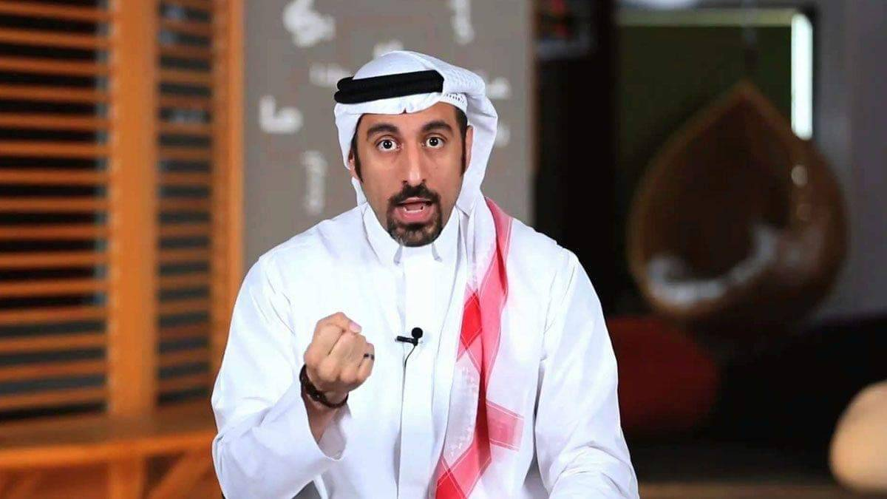

Ahmed Mazen Ahmed Asaad Al-Shugairi, a Saudi journalist. He started by presenting social intellectual programs
Media activity
come on guys The Yalla Shabab program presented by Ahmed Al Shugairi with a group of young men that was shown on MBC channel years ago.
trip with Sheikh Hamza Yusef Al-Shugairi participated in this program, the idea of show group of young men go the American sheikh
khawater the idea of the program is to present a specific youth issue in a five-minute episode in a form that is closer to advice directed to young men and women
Social activity
Culture website The Culture website contains a lot of information related to the issues that arise from time to time in the shows
cafeteria located in the city of Jeddah in Saudi Arabia Al-Shugairi describes it as a "commercial cultural experience," as it is a café that not only serves food and drinks, but also has a library where books are available
i7san website It is considered the first interactive social network to spread culture and volunteer work in the Arab world, as it allows its members to establish volunteer projects, promote them the site acts as a link between volunteers,and supporters
My journey with Gandhi this book talk about Ahmed and his experience in this life, and through it he provides advice for the Muslim person to benefit him in his life
if you have time you should read more about this incredible human being on his wikipedia entry.